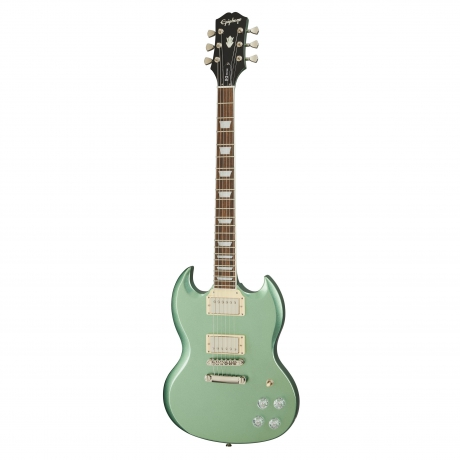

Ürünlerimiz
-

-
Epiphone SG Muse Elektro Gitar (Wanderlust Green Metallic) 7,621.95 TL
-
Cordoba C1M 1/2 Protégé Series 1Klasik Gitar (Natural Matte) 1,880.51 TL
-
PDP Drums Centerstage 22" Akustik Davul (Royal) 5,860.43 TL
-
Kurzweil M70SR Dijital Piyano (Gülağacı) 6,699.00 TL
-
Fenix FV44 Keman (4/4) 1,243.72 TL